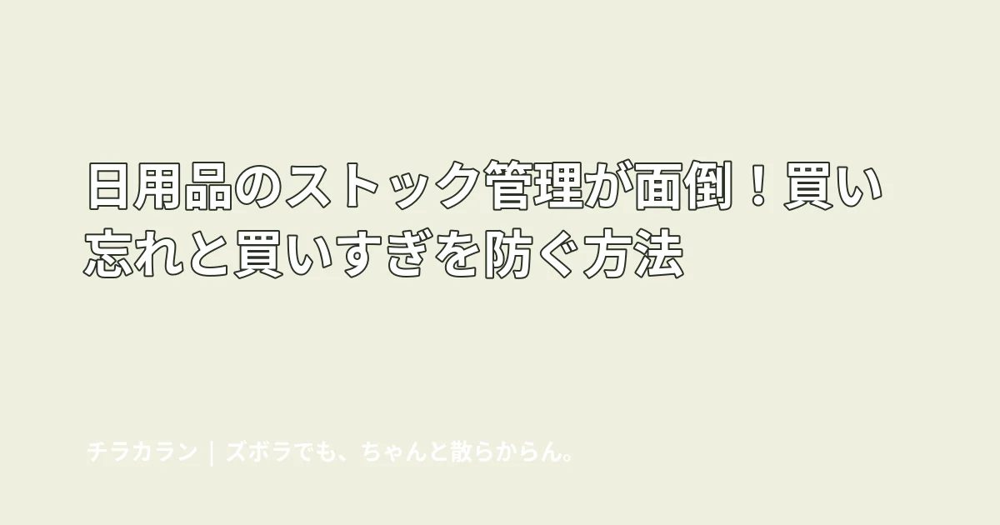
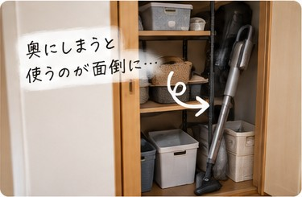
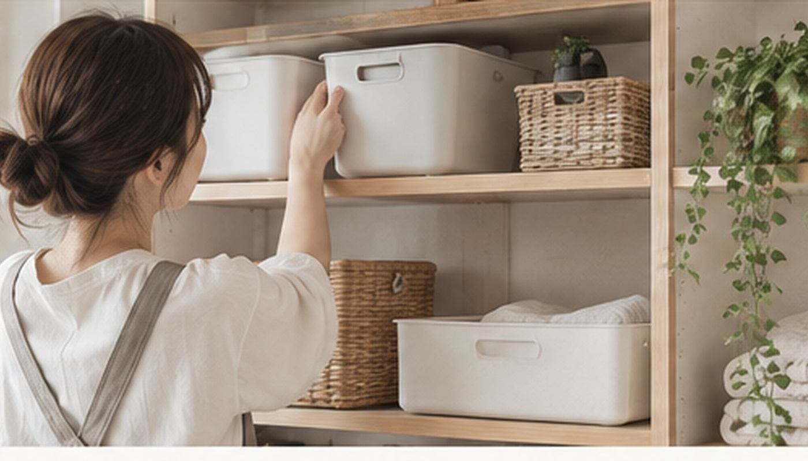

日用品のストック管理が面倒！買い忘れと買いすぎを防ぐ方法
日用品の在庫を細かく記録するのが続かないなら、ストック場所と上限を決めるだけでも買い忘れ・買いすぎを減らせます。

結論：在庫表より「ここに入るだけ」にする
洗剤やティッシュの残数を毎回アプリへ入力する方法が合う人もいますが、それ自体が新しい家事になることもあります。まずはストック場所と量の上限を決める方法が簡単です。
1カテゴリ1か所にまとめる
同じ洗剤が洗面所と廊下収納の両方にあると、在庫が見えにくくなります。できる範囲で同じ種類は1か所へ集めます。

「最後の1個を開けたら買う」にする
残数を細かく数える代わりに、予備の最後の1個を開封したら買い物リストへ入れるルールにすると判断回数を減らせます。
セールでも置き場所以上に買わない
安いとまとめ買いしたくなりますが、収納からあふれると別の場所へ置き、存在を忘れやすくなります。「この箱に入る分まで」と上限を決める方が管理しやすくなります。

定期購入は消費ペースが安定している物だけ
毎月ほぼ同じ量を使う物なら定期購入も便利です。一方、使用量が変わりやすい物は余りやすいので、スキップや変更が簡単か確認します。
まとめ
完璧な在庫管理より、見れば分かる仕組みを作る方がラクです。数える・記録する作業を増やさず、置き場所と上限から整えてみましょう。
チラカランの考え方
頑張る回数を増やすより、頑張らなくても回る仕組みを。